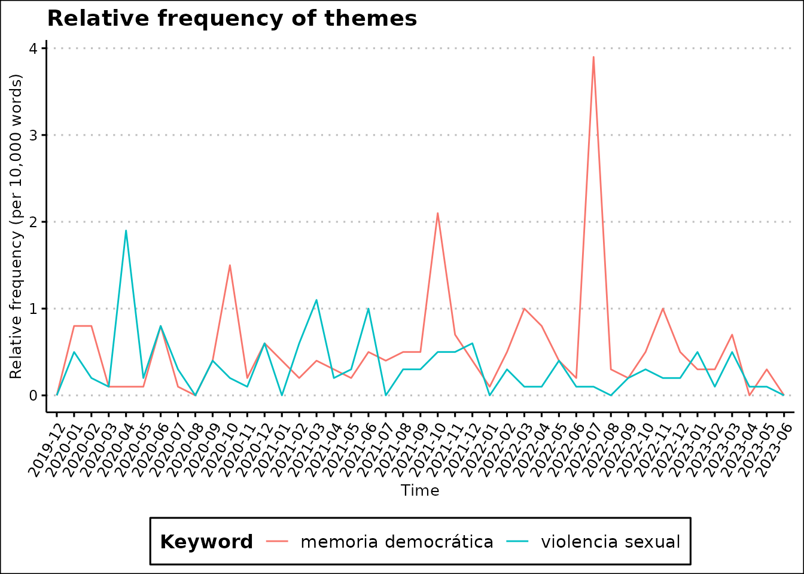

Text and Time
text_and_time.RmdIntroduction
This vignette introduces the analysis of flows and time in textual data. Many corpora are organized according to sequential time: parliamentary sessions, discourses, and social media posts, among others. In these cases, it is important to analyze the evolution of words and themes over time.
Here, we present two ways of examing time in texts. The first is to count the frequency of categories or themes (based on a set of kewords) over time. The second is to analyze the salience of different actors or groups in the overall flow of words.
Counting words over time
The function countKeywords allows users to count the
frequency of a set of dictionary keywords in a corpus over time. The
function requires a corpus, a dictionary of keywords, and a grouping
variable. The function will return a data frame with the frequency of
each keyword in each group.
In the following example, we employ the spa.sessions
corpus, which contains the speeches of the Spanish Congress. We
aggregate the speeches by month and count the frequency of two themes:
“sexual violence” and “democratic memory”.
# Create a new variable in the dataset
# containing the month of the session
spa.sessions$mes <- substr(spa.sessions$session.date,1,7)
# Aggregate the texts by month
ag <- aggregate(list(text=spa.sessions$speech.text),
by=list(mes=spa.sessions$mes),
FUN=paste,
collapse="\n")
# Convert the new data into a corpus object
library(quanteda)
cs <- corpus(ag)
# Create a dictionary for sexual violence
# and democratic memory
dic <- dictionary(
list("violencia sexual"=c("volencia sexual",
"violencia machista"),
"memoria democrática"=c("memoria democrática",
"memoria histórica")
))
# Count the number of matches by
# category for each month
ng <- countKeywords(cs,
dic,
group.var = "mes",
rel.freq = TRUE,
quietly = T)
# Aggregate the results by category
ng <- aggregate(frequency~level1+groups,
data=ng,
FUN=sum)
# Multiply the values for 10 thousand
# to improve chart readability
ng$frequency <- round(ng$frequency*10000,1)
# Rename the columns
names(ng) <- c("Keyword","Time","Density")
# Create the plot
library(ggplot2)
library(ggthemes)
ggplot(data=ng,
aes(
x=Time,
y=Density,
group=Keyword,
color=Keyword))+
geom_line()+
theme_clean()+
theme(legend.position="bottom",
axis.text.x = element_text(angle = 60,
vjust = 1,
hjust=1))+
labs(title="Relative frequency of themes")+
ylab("Relative frequency (per 10,000 words)")
Salience of actors over time
Another strategy consists in evaluating the salience of different
actors or groups in the overall flow of words. The function
plotStream allows users to visualize the evolution of the
salience of different actors in a corpus over time. The function
requires a corpus, a grouping variable, and a variable with the names of
the actors. The function will return a streamgraph with the evolution of
the salience of each actor over time.
We employ the spa.sessions corpus to analyze the
salience of the representatives of the Vox party in the Spanish
Congress. We select the four most salient representatives of the party
and plot the evolution of their salience over time.
# Select the most salient representatives for
# the Vox party
ag <- spa.sessions[
spa.sessions$rep.name%in%
c("Abascal Conde, Santiago",
"Espinosa de los Monteros de Simón, Iván",
"Olona Choclán, Macarena",
"Ortega Smith-Molina, Francisco Javier"),]
# Create a variable of month for smoothing the data
ag$month <- substr(ag$session.date,3,7)
# Aggregate words by representative and month
ag <- aggregate(
list(words=ag$speech.tokens),
by=list(
month=ag$month,
rep=ag$rep.name,
party=ag$rep.party),
sum,
na.rm=T)
# Order the data by month
ag <- ag[order(ag$month),]
# Create the chart
plotStream(ag,
x="month",
y="words",
group = "rep")